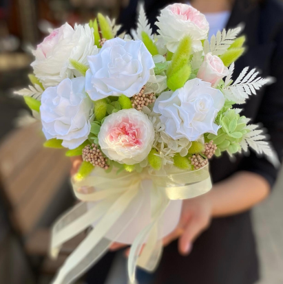
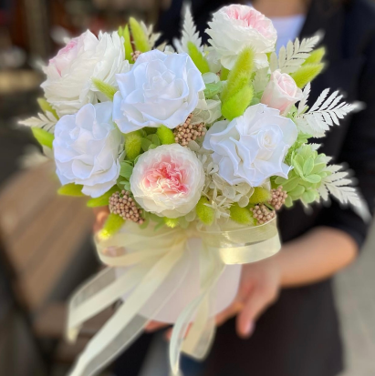

Cтудия флористики
Интерьерный декор из натуральных стабилизированных цветов
От идеи до полной реализации
Стабилизированные цветы
Уникальные цветы, которые не вянут, не мерзнут, не требуют полива.
Разве можно не влюбиться в их
натуральную красоту и практичность?!
Стабилизация - это процесс замены природного сока раствором на основе глицерина.
Бутоны срезают на
самом пике цветения и помещают в контейнеры для дегидрации при
соблюдении необходимого температурного
режима. Сложный технологический процесс
позволяет сохранить натуральный бутон на длительное время.
Композиция из стабилизированных цветов и растений станет
подарком,
который точно удивит и каждый день, и все 365 дней,
будет восхищать
и радовать эстетикой исполнения.
 


Безопасны и экологичны
Не вызывают аллергию